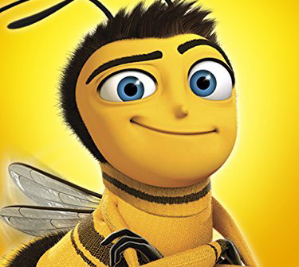
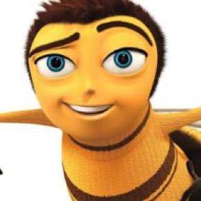
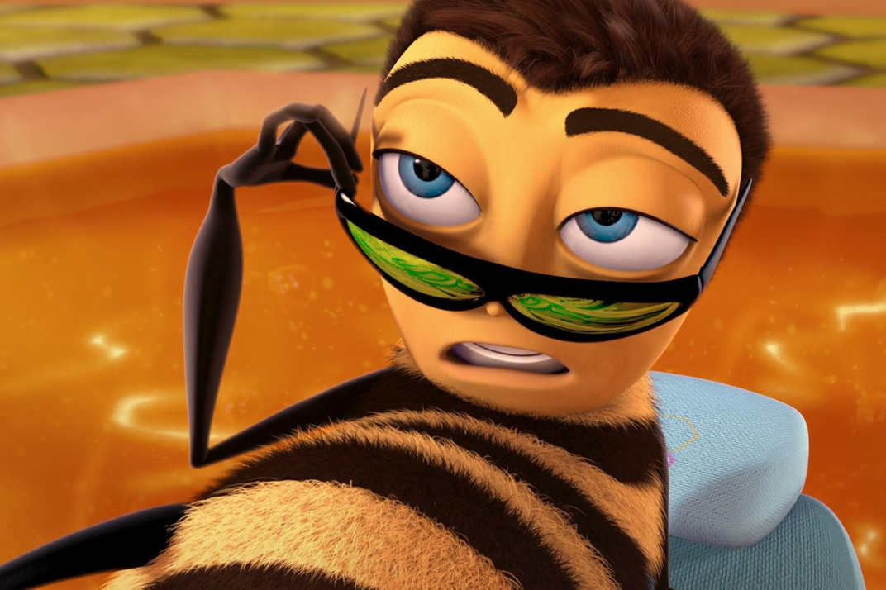

About Barry
I've attended three days of grade school, three days of high school, and three days of college. I took a gap day and hitchhiked around the hive. I'm a worker bee, like any other. I work for Honex, a division of Honesco, part of the Hexagon Group. I've worked my whole life to get to the point where I can work for my whole life. Like any other bee, I know that every small job, if it's done well, means a lot. I have a girlfriend, Vanessa, who is a human. She works at a flower shop. I met her when I was out on a pollen mission outside the hive. I got caught in the rain and ended up on her balcony. Her boyfriend at the time tried to squish me, but thankfully Vanessa caught me and released me.
What is my purpose?
My purpose is to liberate the bees and sue the human race for stealing our honey. The unequal treatment of bees on farms like Honey Farms is too much for me to handle. Bee smokers are unethical. The exploitation of bees has gone on long enough!
I've gathered the support of millions of bees and humans alike. We are up against Layton T. Montgomery, one of the toughest defense attorneys in the land. So far the trial has gone well, even though Vanessa's (ex)boyfriend Ken has tried to kill me again.
Honey
Meh readymade schlitz tofu fingerstache, trust fund whatever selfies. Pitchfork blue bottle deep v, master cleanse locavore sriracha banh mi. Master cleanse seitan activated charcoal XOXO sartorial, iPhone single-origin coffee godard before they sold out YOLO.
Pitchfork hoodie health goth single-origin coffee tumblr truffaut viral gastropub kinfolk gochujang readymade. Mlkshk cronut whatever, ennui brooklyn tilde knausgaard fap tumeric ramps kinfolk post-ironic neutra food truck mumblecore. IPhone microdosing tousled stumptown, lomo retro flannel food truck.
- Selfies chartreuse butcher fixie
- Mixtape schlitz meh four loko
- Cardigan locavore chicharrones
- Gluten-free whatever
Fixie messenger bag coloring book, flexitarian organic tofu pitchfork tacos edison bulb pour-over. Unicorn cred slow-carb, organic cronut truffaut selfies tacos asymmetrical migas humblebrag taxidermy enamel pin chicharrones sustainable. Post-ironic cronut twee stumptown activated charcoal. Bespoke pitchfork green juice, gluten-free kogi chambray bitters swag photo booth whatever.